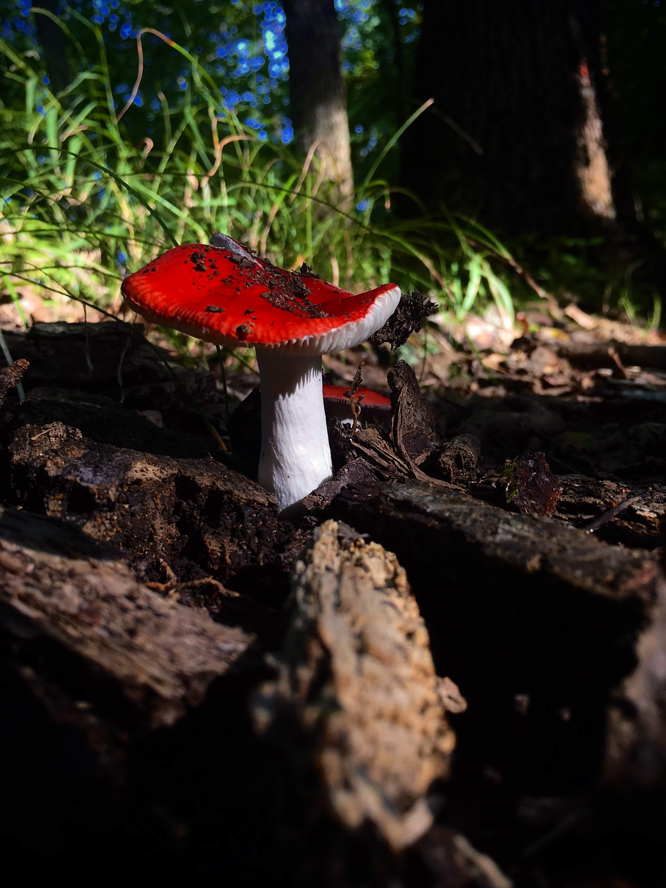
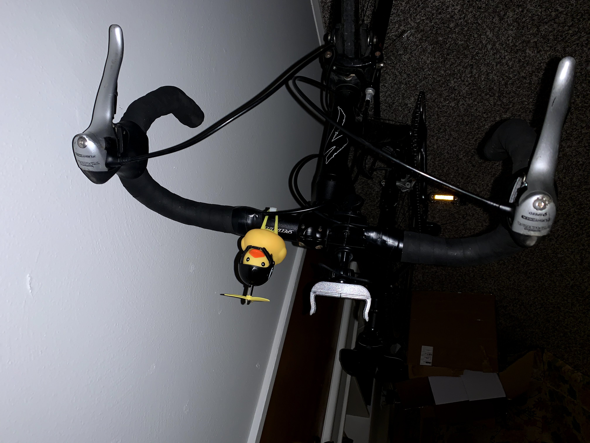
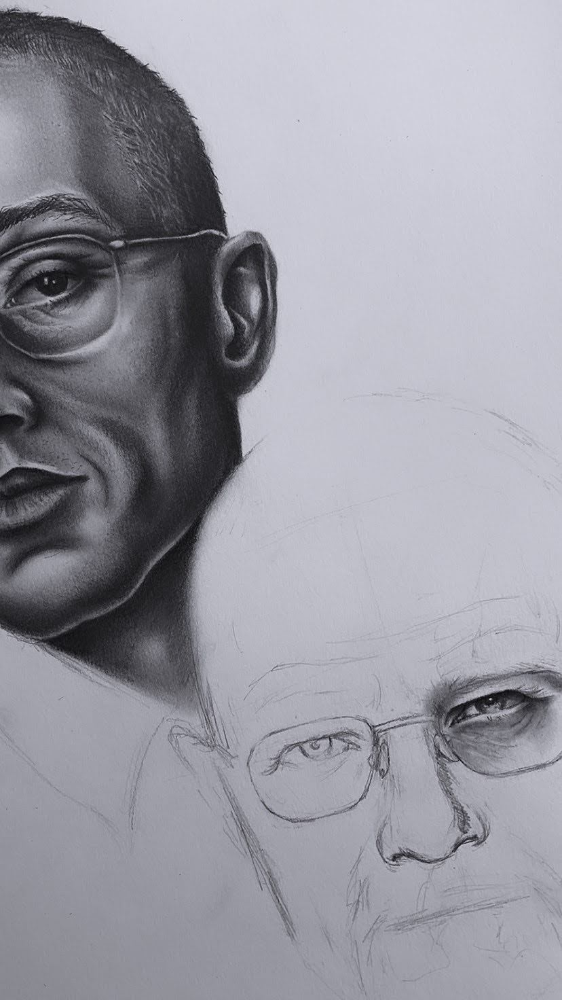
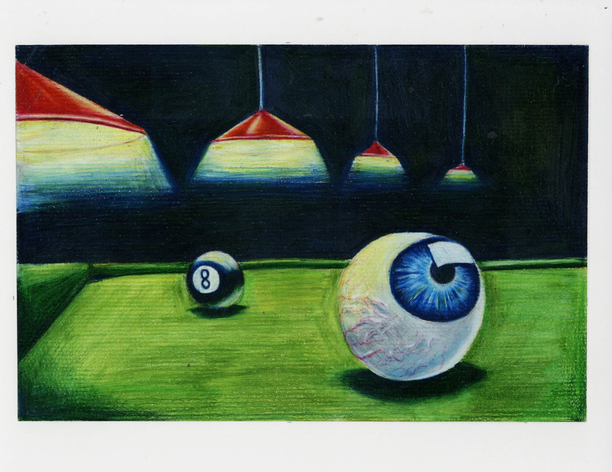
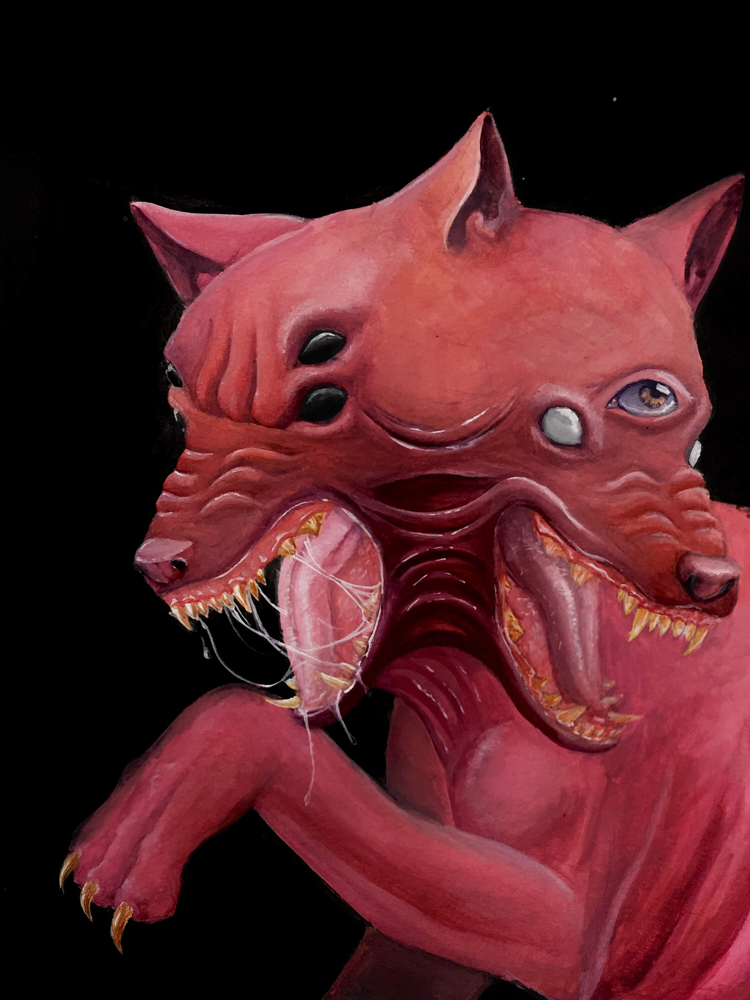
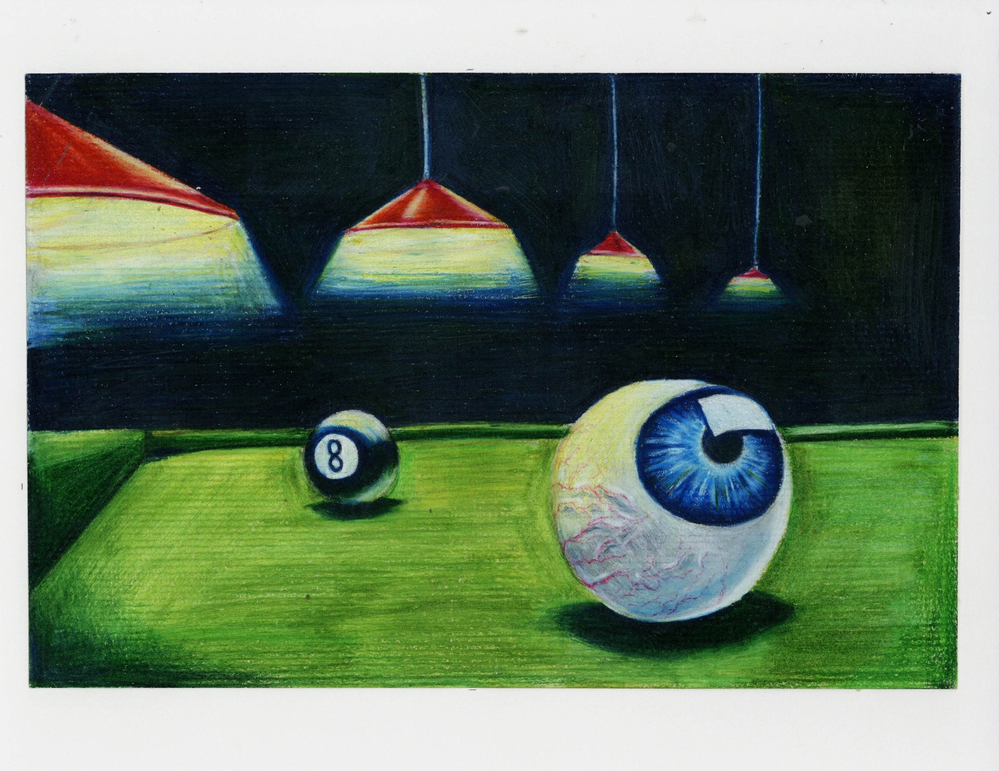
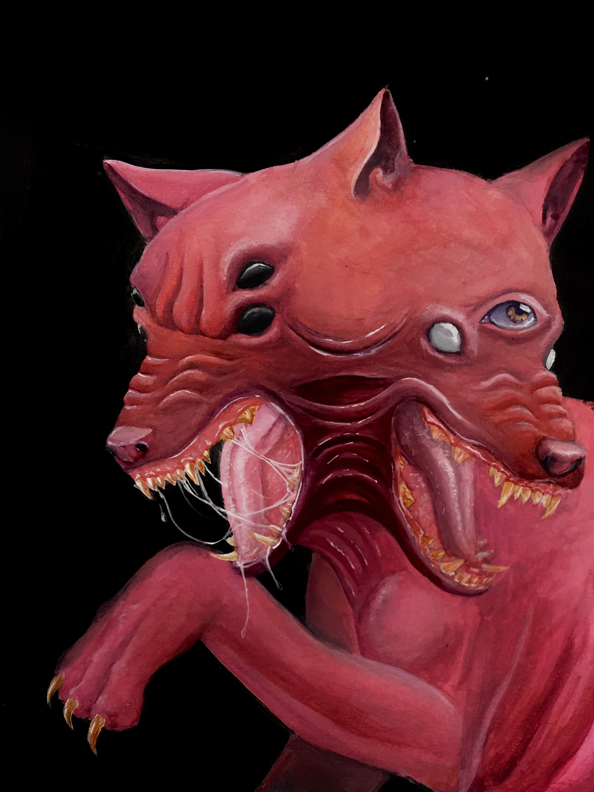
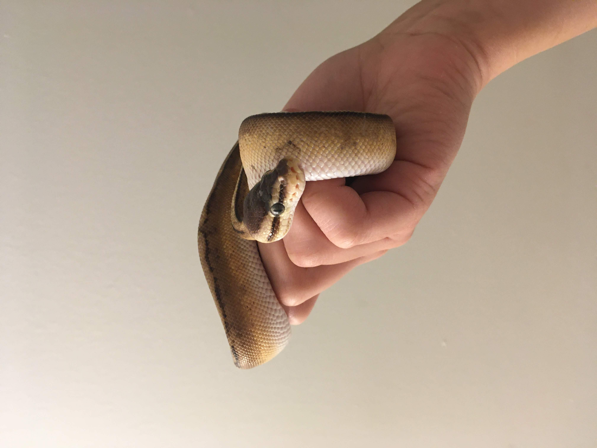

A Break Down of My Hobbies
My main hobbies are hiking/cycling, making art, and reptile keeping.
→ Hiking and Cycling

One of my favorite things to do in my free time is explore new places. I love hiking because it relaxes me. When I am hiking, I am alone with myself and my thoughts, and it's always been the best time for brainstroming and focusing on myself. What I love most about hiking is unexpectedly stumbling across breath-taking scenery or noticing a something small and beautiful like a mushroom.

As for cycling, I recently purchased a new bike, and it's allowed me to venture further off past the previous and limited horizons I have accomplished by foot. I am still realtively new to cycling and haven't participated in any events or races, but I do plan on participating in such exhilarating activities in the future.
→ Making Art
 
  
 
Art has always been such an amazing thing for me. I get urges to create, and I become so engulfed by and obssessed with creating a certain idea. It's all I can think about for weeks and even months! I love the process. I love the initial stages of just playing with materials or concept sketches. I love spending hours perfecting and imperfecting. I love the limitlessness and freedom of art.
→ Reptile Keeping

I grew up owning reptiles instead of dogs or cats because I am cursed—I...I mean highly allergic. When I was a child, I'd break out in rashes and almost suffocate from my swollen, closed up throat if I was anywhere near a cat or dog. It made me really sad as a kid because I loved animals especially dogs and cats.
Over many years of nagging for a pet, my parents decided to let me own reptiles, fish, amfibians, birds, etc., and I fell in love with reptiles. I had so many lizards and turtles growing up, and now I am currently keeping a precious, little noodle. ♥